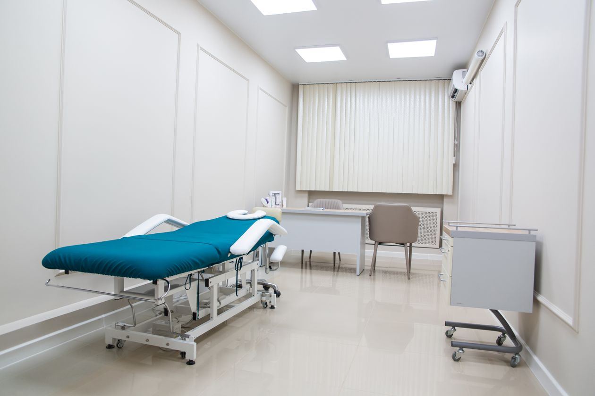

About the doctor
One doctor, on purpose
I'm Dr Margaret Lawson — most patients call me Dr Meg. I read medicine in London, trained as a GP in the South West, and spent ten years as a partner in a large NHS practice before opening this one in 2016. I am a Member of the Royal College of General Practitioners and on the GMC's GP register; both are checkable in the usual public registers, and reception will happily show you the certificates — checking your doctor is a reasonable thing to do.
The large practice taught me what scale does to medicine: ten-minute appointments, a different doctor every visit, results read by whoever was on. None of that was the doctors' fault, and all of it was the system's. So this practice is built the other way round — one doctor, a list capped at 900 patients, appointments twice the usual length, and fees printed where everyone can read them before they commit to anything.
Small has honest limits, and I'd rather state them than hide them: there is one of me. When I am on leave, a trusted locum covers urgent care and routine appointments pause — we tell you the dates at the start of the year. If your problem needs a big team's machinery, my job is to get you to it quickly, not to pretend a small practice can do everything.

Your first visit, step by step
What actually happens
- You book the length, not just the time
Phone or call in. Reception will ask what the appointment is broadly for — not for details — so we can match you to a 20, 40 or 45-minute slot. The fee is confirmed before the booking is made.
- We set up your record
Before the visit, we request your previous GP notes with your consent, so your history is in the room with us rather than repeated from memory.
- The 45 minutes themselves
Your full history, an examination where it's needed, and time to ask the questions you wrote down. Nothing is examined without your consent, and a chaperone is always available — just ask, no reason needed.
- A written plan before you leave
What we found, what happens next, what to watch for and when to come back — in writing, in plain English, yours to keep.
- Follow-through
Tests are booked with their results call already attached. If we refer you, the letter goes within two working days and you get a copy.
How the practice runs
The working details, in plain English
- Booking
- By phone or in person, so a person can check the slot fits the problem. Routine appointments within three working days; urgent problems are triaged to the same-day slots released at 8:00 am. If the list is full, we say so and offer the waiting list — we do not take bookings we cannot honour.
- Results
- Every result is reviewed by the doctor who ordered the test. Normal results go by text with the doctor's comment; anything needing discussion is covered in your booked results call (£25, on the fee table) or a follow-up appointment. No result is filed unseen.
- Referrals
- Discussed with you in the appointment — where you'd like to go, what it is likely to cost, what the wait looks like. The referral letter is included in your consultation fee and copied to you. Private referral is your choice, never a condition of being seen here.
- Out of hours
- Honestly: this is not a 24-hour service. When the practice is closed, urgent care is through NHS 111 and the regional out-of-hours provider, and your record summary is available to them with your consent. In an emergency, always 999 first.
- Records & privacy
- Your record is held on an accredited clinical system, access-logged, and never sold or shared for marketing — ever. You can see your record, and ask for a copy, at any time; requests are answered within one month, free of charge. We keep records for the periods the law requires and then destroy them securely.
- Fees philosophy
- Every fee is printed on the home page, reviewed each April, and never changed mid-course of treatment. We charge for time and procedures — not for letters we've agreed are included, not for results of tests we ordered being read, and not for saying “you don't need an appointment for that”.
- Payment & terms
- First visits are paid at booking; other appointments are paid on the day, by card. Cancel or move an appointment up to four working hours ahead and nothing is charged; later than that, the slot fee applies, because the slot was held for you. Plan membership is monthly, cancellable with one month's notice.
- Complaints
- Tell us first — most things are fixable in a conversation, and the patient panel chair can sit in if you'd like. The practice complaints procedure is printed at reception and sent on request; it includes the route to the Parliamentary and Health Service Ombudsman if we cannot put things right.